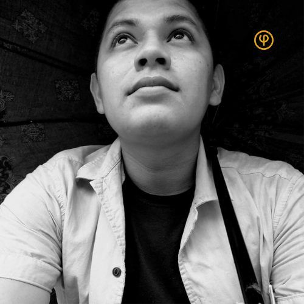
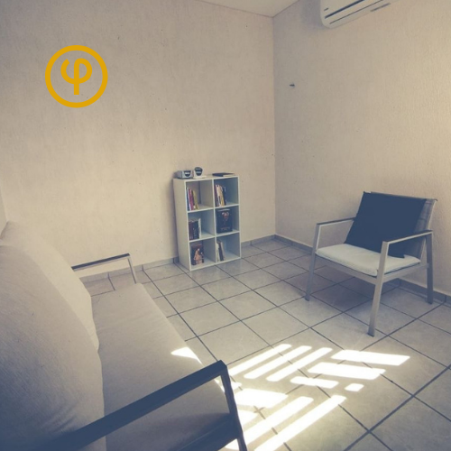

Carlos Cruz
Psicólogo y Tanatólogo dedicado a la arqueología del gesto y la radiografía de lo invisible. He dedicado mi trayectoria a transformar el dolor en terreno fértil para la vida.
"Un refugio para el dolor; un espacio para la existencia."
SOLICITAR ACOMPAÑAMIENTO
Psicólogo y Tanatólogo dedicado a la arqueología del gesto y la radiografía de lo invisible. He dedicado mi trayectoria a transformar el dolor en terreno fértil para la vida.

Acompaño procesos de duelo y crisis de sentido desde una perspectiva existencial. Un espacio seguro, profesional y profundamente humano.
